¶ Gas Tanks. Every bike has to have one somewhere. Gas Tanks come in three different flavors.
- Steel Gas Tanks.
- Plastic Gas Tanks.
- Fiberglass Gas Tanks.
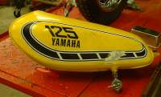 Steel Gas Tank Yamaha |
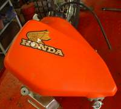 Plastic Gas Tank Honda |
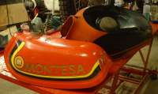 Fiberglass Gas Tanks Montesa & Bultaco |
Most all Gas Tanks are steel. Steel has one problem. It rusts. They tell me that BMW is the only motorcycle manufacturer that puts an internal coating (Red) on the inside of their Gas Tanks. I've seen a lot of rusted Gas Tanks but none from BMW, so this must be true. If you have a rusted tank, you are between a rock and a hard spot. The best fix is a new tank. This is not always practical because rusted tanks are usually found on old bikes. A new tank can cost $400 to $500 dollars if you can find one. Most old bikes aren't worth it. Sooo... what to do?
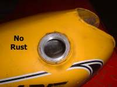 No Rust in Gas Tank |
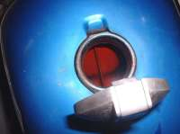 BMW Coated Gas Tank |
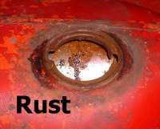 Rusted Gas Tank |
There are several kinds of tank coatings offered for sale. I've only used one, the most common major brand, and I was not impressed. The tank I used it on was in like new condition with a small crack in the bottom that seeped gas. The tank had no rust in it. I cleaned, acid washed, and coated the tank, per factory instructions. I let it dry for two days with a very low pressure air hose circulating air to the tank. I put gas in and guess what?
It leaked right at the crack. I then soldered the crack and that fixed it. I figure that if it will not seal a good clean tank what chance will a rusty one have. Others may have had better luck, but I don't like paying $30-$35 for nothing. It is also true that I have not tried all the coatings on the market. The choice is up to you. One thing else to consider... I've seen a number of tanks where the coatings have come loose and it ends up quite the mess.
So what to do? If rust is the only problem here is what I do. I put some large nuts (off bolts, not the eating kind.) in the Gas Tank and shake it vigorously for a while. Then wash out as much rust as you can with gas. Now put the Gas Tank back on and put a see through fuel filter in the gas line to the carb. This will keep any rust or dirt from getting into the carb. When the filter fills up with rust, change it for a new one. This is the cheapest way to go.
If you have a small rust pinhole you may have a really bad problem. The tank may look good on the outside, but odds are the inside is all rusted out. Clean it out enough to solder or weld it and lots more holes magically appear. The only real cure is a new or different tank.
If the leak is caused by a crack or puncture you can repair it by soldering or welding the tank. The only problem is gas tanks tend to blow up when a flame is applied to them. Not good! The cure is pretty easy, but might be hard to do for the average person. You will have to have a tank of some kind of inert gas that will not burn. Simply fill the gas tank with inert, non-flammable, gas (Like Nitrogen) under slight pressure and weld away. No oxygen, no blown up Gas Tanks. Just make sure the tank is purged of any air!
I'm always surprised at how many good welders don't know this. They try to fill the tank with water, flame off any gas, and BOOM they still blow up. Right idea, wrong filler. For the average guy it might just be best to take it to a good welder who knows the trick. You can get a two part epoxy made especially for gas tank repair. I've used it a couple of times and the fix held. Just remember that these epoxies work good for a limited time. Sooner or later they will fail. Sometimes they seem to last forever... other times the same glue doesn't last at all. On an old bike or in an emergency they do seem to work well.
If you have to get a newer, unrusted Gas Tank, try a Motorcycle Salvage Yard. Take your old Gas Tank with you. You may be able find a Gas Tank off another make or model that will fit with a little bit of modification.
Now about fuel petcocks. Again there are three flavors.
- Standard Fuel Petcock.
- Vacuum on/Off fuel Petcock.
- On/Off fuel Petcocks.
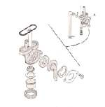 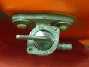
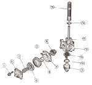 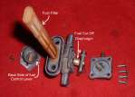
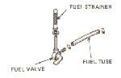 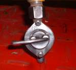
If there is fuel flowing but the valve won't turn it off, the fix is easy. Just get a plastic inline valve from a lawn mower dealer and put it in the fuel line going to the carb.
If the factory doesn't have any replacement parts (like the vacuum diaphragm) you can, sometimes, get after market parts. I haven't used any because by the time the petcock gets this bad the bike is so old no one wants to spend the money on it.
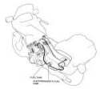
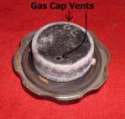
Older (1960s-early 70s) Japanese bikes and bikes with two piece gas tanks (some Harley-Davidsons) will have a crossover tube. These are a real pain because you must drain all the gas before you can take the tank off. Some crossover tubes are in the front of the Gas Tank and some are in the back.
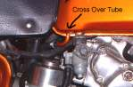 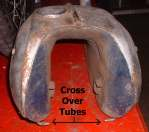
A lot of dirt bikes now have plastic tanks, which are real neat until one gets a hole or crack. They do have some plastic glues out but I would not trust them on a gas tank. It is a good idea to keep the plastic tanks (and any plastic) out of the sun as much as possible. Plastic Gas Tanks and fenders, that are supposed to last forever, fall apart after years in the sunlight. I speak from much bitter experience.
I don't know of any motorcycle manufacturers that are currently using fiberglass Gas Tanks. I'm not sure how fiberglass will handle all the E-10 and higher oxygenated fuel mixes being sold now-a-days. Depending on who you talk to, it works good or does not work good. Take your pick.
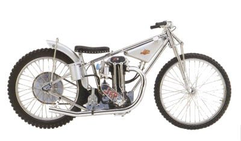 |
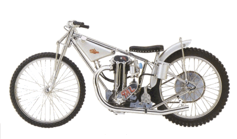 |
Copyright © 1999-2015 dansmc.com. All rights reserved.